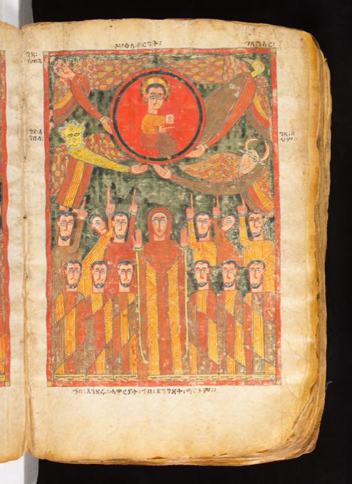
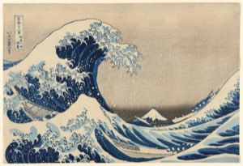

From Challenges to Solutions
the 2026 themeAt the 2025 workshop, participants from GLAM, the humanities, HCI, and AI mapped the field's hardest problems together. That map is this year's starting line: 2026 is about answers — prototypes, systems, studies, write-ups, and decks that move any of these challenges forward.

OCR & layout analysis
A model locates headlines, columns, and photographs on a 1906 front page — these boxes come from the Library of Congress's own OCR data.
Every newspaper of the twentieth century, searchable as one archive.
New-York Tribune, 1906 · Library of Congress · public domain

Provenance & period dating
Detecting and dating the collector seals on a Tang scroll reconstructs 1,200 years of ownership — provenance written on the object itself.
A provenance graph spanning every collection on earth, one seal at a time.
Night-Shining White, ca. 750 · The Met · CC0

Hieroglyph decipherment
Text-region detection separates hieroglyphic columns from painted vignettes — the first step toward machine-assisted reading.
A reading companion for every undeciphered fragment in every archive.
Book of the Dead of Nauny, ca. 1050 BCE · The Met · CC0

Subject & person identification
Iconographic classification recognizes figures and scenes across manuscript traditions — who is depicted, and how the depiction travels.
Every unnamed saint, donor, and sitter linked across the world's collections.
Illuminated Gospel, Ethiopia, 14th c. · The Met · CC0

Pictograph & glyph reading
Document understanding treats a 1531 tribute record on its own terms — pictographs, counted goods, testimony that won a lawsuit.
Nahua scribes' testimony searchable beside the colonial records it answered.
Huexotzinco Codex, 1531 · Library of Congress · public domain

Translation & text–image alignment
Alignment maps four columns of Persian verse to the feast they describe — a bridge between reading and looking.
Any page, any language, any century — read aloud in yours.
Shahnama of Shah Tahmasp, ca. 1525 · The Met · CC0

Collection discovery
Image similarity links New York's impression of the Great Wave to Chicago's — same woodblock, different printing, 700 miles apart.

The match: Art Institute of Chicago · CC0 — found by visual search.
One visual query across every museum on earth.
Under the Wave off Kanagawa, ca. 1830 · The Met + AIC · CC0

Pattern analysis & palette extraction
These five swatches were computed from the tunic itself — a weaver's working palette from thirteen centuries ago.
Motif kinship maps across the whole history of Andean weaving.
Tapestry tunic, Wari, 7th–9th c. · The Met · CC0 · funerary context noted with respect

3D scanning · AR / VR / XR
A laser scan made the robe's relief carvings legible for the first time — and the model is already explorable in AR at 3d.si.edu.
Stepping into the cave temple that held it — in VR, from any classroom on earth.
Cosmic Buddha, ca. 550 · Smithsonian NMAA · CC0
Audio enhancement
This waveform was computed from a 1909 shellac disc — the Fisk Jubilee Quartet, public domain since 2022.
Every early recording denoised, transcribed, and singable again.
Swing Low, Sweet Chariot, 1909 · LOC National Jukebox · public domain
The next reading is yours
A system, a prototype, a study, a critique that builds — if it moves any of these challenges toward a solution, it belongs here.
AI–GLAM alignment
What system features do we actually need to meet GLAM's needs?
accuracy & AI slop · deepfakes · datasets & benchmarks · uncertainty · context beyond accuracy
Cognitive, educational & social impact
How do — and how should — GLAM systems influence users and society?
critical thinking & literacy · cognitive enhancement vs. diminishment · creativity · trust · damage control
Incentives
Who pays for this work, and what does that change?
funding sources · commercial products · paywalls
IP, copyright & authorship
Who owns collections, models, and their outputs?
rights & licensing · attribution · authorship of AI-assisted work
Ethics
What must these systems never do — and who decides?
privacy · fairness · regulation
The bridge is the method
Humanities scholars know how to critique; technologists know how to build. Neither succeeds alone.
This workshop pairs critique that builds with building that listens — toward actionable solutions.
FULL CHALLENGE MAP: THE 2025 MIRO BOARD → · VIEW-ONLY